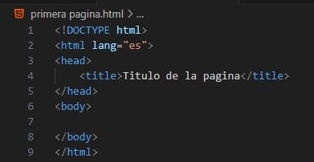
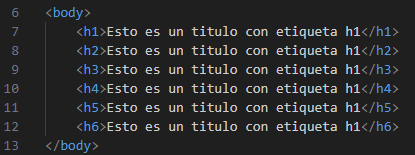
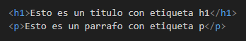
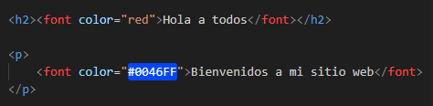
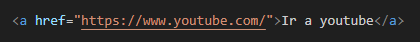
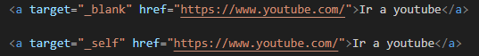
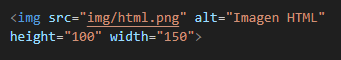
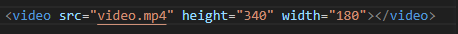
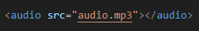
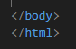

El Lenguaje de Marcado de Hipertexto (HTML) es el código que se utiliza para estructurar y desplegar una página web y sus contenidos. Por ejemplo, sus contenidos podrían ser párrafos, una lista con viñetas, o imágenes y tablas de datos.
Entonces, ¿qué es HTML en realidad? HTML no es un lenguaje de programación; es un lenguaje de marcado que define la estructura de tu contenido. HTML consiste en una serie de elementos que se utilizan para encerrar diferentes partes del contenido para que se vean o comporten de una determinada manera. Las etiquetas de encierre pueden hacer de una palabra o una imagen un hipervínculo a otro sitio, se pueden cambiar palabras a cursiva, agrandar o achicar la letra, etc.
Volver al inicioEn 1989 existían dos técnicas para vincular documentos electrónicos: los hipervínculos o enlaces (hiperlinks o links) y, por otro lado, un poderoso lenguaje de etiquetas denominado SGML. En ese entonces, Tim Berners-Lee, quien trabajaba en el Centro Europeo de Investigaciones Nucleares CERN informó a la prensa sobre su labor en un sistema que permitiría acceder a ficheros en línea, funcionando sobre redes de computadoras o máquinas electrónicas basadas en el protocolo TCP/IP. En su origen, fue desarrollado para compartir información entre científicos de distintas universidades e institutos de investigación de todo el mundo
A principios de 1990, define por fin el HTML como un subconjunto del conocido SGML y crea algo más valioso, incluso, el World Wide Web.
Tim Berners-Lee creó el proyecto World Wide Web, junto con un sistema que facilitaba la lectura de información a través de un programa de navegación. Este programa, denominado WorldWideWeb, fue el primer navegador web y se desarrolló durante la segunda mitad del año 1990; posteriormente fue rebautizado como Nexus, para evitar confusiones por tener el mismo nombre que la tecnología que representaba. A este le siguieron otros dos navegadores: el Line Mode Browser y el ViolaWWW. El último, desarrollado en 1992, fue el primer navegador en popularizarse entre los primeros usuarios de la World Wide Web
Los trabajos para crear un sucesor del HTML, denominado HTML+, comenzaron a finales de 1993. HTML+ fue diseñado originalmente como un avance gradual desde el formato HTML anterior. La primera especificación formal de HTML+ se identificó con el número de versión 2 para distinguirla de las propuestas no oficiales previas. Aunque los esfuerzos para HTML+ continuaron, nunca se convirtió en un estándar, a pesar de ser la propuesta formalmente más parecida al aspecto compositivo de las especificaciones actuales.
El borrador del estándar HTML 3.0 fue propuesto por el recién formado W3C en marzo de 1995. Este introdujo muchas nuevas capacidades, como la creación de tablas, el flujo de texto alrededor de las figuras y mostrar elementos matemáticos complejos. Aunque se diseñó para ser compatible con HTML 2.0, era demasiado complejo para ser implementado con la tecnología de la época. Cuando el borrador del estándar expiró en septiembre de 1995, se abandonó debido a la falta de apoyo de los desarrolladores de navegadores web. El HTML 3.1 nunca llegó a ser recomendado oficialmente, y el siguiente estándar fue el HTML 3.2, que abandonaba la mayoría de las nuevas características del HTML 3.0 y, a cambio, adoptaba muchos elementos desarrollados inicialmente por los navegadores web Netscape y Mosaic. La posibilidad de trabajar con fórmulas matemáticas, que se había propuesto en el HTML 3.0 se integró en un estándar distinto llamado MathML.
En 1997, se publicó HTML 4.0 como una recomendación del W3C. adoptando muchos elementos específicos desarrollados inicialmente para un navegador web concreto, pero al mismo tiempo comenzó a limpiar el HTML, señalando algunos de elementos como «desaprobados» (deprecated).
HTML 4.0 implementa características como XForms 1.0 que no necesitan implementar motores de navegación incompatibles con algunas páginas web HTML. En 2004, el W3C reabrió el debate de la evolución del HTML, y presentó las bases para la versión HTML5. No obstante, este trabajo fue rechazado por los miembros del W3C y se dio preferencia al desarrollo del XML.
Apple, Mozilla y Opera anunciaron su interés en seguir trabajando en el proyecto bajo el nombre de WHATWG, basado en la compatibilidad con las tecnologías anteriores.
En 2006, el W3C mostró interés en el desarrollo de HTML5, y en 2007 se unió al grupo de trabajo del WHATWG para unificar el proyecto.
Volver al inicioUn editor de texto es un software informático que facilita la creación y edición de páginas web en lenguaje de marcado de hipertexto (HTML). Dado que el código de fuente está basado en texto se puede modificar directamente al ir escribiendo los comandos. Este tipo de editores tienen funciones especiales para desarrollar la estructura del sitio web.
Entre esas funciones están la detección de etiquetas, la identificación de errores de sintaxis en la escritura del código, autocompletar texto y la compatibilidad con otros lenguajes.
Este crea las páginas usando solo el lenguaje HTML, que incluye un grupo de etiquetas que señalan elementos determinados dentro de la estructura web. Es el preferido de los desarrolladores porque da mayor precisión y calidad a la página, además de que es más fácil arreglar los errores en el código.
WYSIWYG es el acrónimo de what you see is what you get, que en español se traduce como «lo que ves es lo que obtienes». Estos editores también son conocidos como editores en modo diseño, donde solo arrastras los elementos que quieres incluir, sin necesidad de conocer el lenguaje HTML. Suele ser muy rápido; sin embargo, es difícil corregir errores en la página.
Considerado como uno de los preferidos de los desarrolladores web, Visual Studio Code es un editor que maneja múltiples lenguajes de programación, entre ellos el HTML, Python, CSS y JavaScript. Está disponible para sistemas operativos de Windows, Linux y macOS.
Entre sus características más destacables está su función IntelliSense que resalta la sintaxis del código y lo autocompleta; y su función de depuración que ayuda a identificar fallos de manera automática. Además es compatible con el sistema Git para el control de versiones.

Este es un editor de código abierto creado por Github; también es multiplataforma porque trabaja con los sistemas operativos y lenguajes más populares. Cuenta con autocompletado inteligente, una interfaz de múltiples paneles para editar y comparar código, y un administrador para instalar paquetes.
Te ofrece una vista previa del proyecto que escribes y una de sus grandes ventajas es que puedes editar el código de una página web en colaboración con otros desarrolladores web, en tiempo real.
Lanzado en 2003, es un editor de código abierto que soporta más de 70 lenguajes de programación, entre ellos el HTML. Anteriormente solo estaba disponible para sistemas Windows, pero ya se puede trabajar en Linux con la implementación de Wine.
Su interfaz es sencilla y fácil de usar, incluye una serie de funciones avanzadas como autocompletado del código, resaltado de la sintaxis, división de la pantalla para abrir y trabajar diferentes archivos al mismo tiempo. Además, es compatible con múltiples extensiones para aumentar su rendimiento.
Con una interfaz elegante y sobria, Sublime Text es uno de editores web HTML más destacados; está disponible para Windows, Linux y OS X. Tienes la opción de editar varios archivos a la vez para aumentar tu productividad; es fácil de personalizar y es compatible con varias extensiones.
Sublime Text te permite autocompletar la sintaxis, dividir los paneles para navegar fácilmente entre códigos y usar la función multiple selections para renombrar variables.

Apache NetBeans es un entorno de desarrollo integrado que sirve para editar en varios lenguajes de marcado y de programación; es perfecto para desarrollar un sitio web en HTML5 y es apto para instalarse en sistemas operativos de Windows, Linux y macOS.
Esta herramienta te brinda plantillas de código, funciones de autocompletado inteligente, resaltado semántico de colores, capacidad de navegación entre archivos, opciones de personalización y más.
Es un programa de codigó abierto que te permite agregar diferentes elementos como imágenes, marcado de textos en negritas o cursivas, párrafos de texto, listas de contenido y demás elementos, sin que trabajes directamente con el lenguaje HTML
Está disponible para sistemas Windows, macOS y Linux. Su interfaz de usuario es fácil de manejar, además de que lo puedes descargar e instalar en tu ordenador de forma gratuita.
Creado en 2007 por ActiveState, es un editor de código abierto y está habilitado para soportar los lenguajes más populares de programación como son el HTML, XML, CSS, Python, Perl, JavaScript, Ruby, PHP, SQL y Tcl.
Cuenta con menús desplegables para seleccionar los atributos de las etiquetas, función de autocompletado, comprobación y resaltado de sintaxis, refactorización de código, vista en miniatura para navegación por los códigos de fuente y personalización de interfaz. Además, tiene compatibilidad con un gran número de extensiones o plugins.
Diseñado por Adobe, Brackets es uno de los mejores editores para HTML porque, al mismo tiempo que escribes el código de fuente, te muestra la vista previa de cómo va quedando tu página web. Es apto para sistemas Windows, macOS y Linux.
También soporta los lenguajes CSS y JavaScript. Cuenta con vistas divididas para editar varios archivos de manera conjunta; además de resaltar los códigos con diferentes colores, te permite editar etiquetas con comandos para coordinar el código HTML y el CSS.
Es un editor de código cerrado, cuenta con vista previa incluida para revisar cómo queda el diseño de las páginas y aplicaciones web basadas en estándares.
Su motor de programación simplificado e inteligente ayuda a una edición más rápida, donde se resalta el código. Cuenta también con un administrador de archivos, una colección de plantillas web, así como la función de inserción y edición de imagen.
Quill es un editor de modo de diseño, con el que creas una página web sin tener que preocuparte por la escritura del código HTML, además de que es totalmente gratuito y compatible con los navegadores actuales.
A través de su API es posible acceder modularmente al código para realizar cambios y añadir eventos o elementos.
Volver al inicioLas etiquetas HTML son elementos fundamentales para crear la estructura y el contenido en una página web. Son palabras o símbolos que se utilizan para indicar al navegador cómo interpretar dichos elementos en una página web.
Una etiqueta de apertura <etiqueta>
Un contenido (texto, imágenes, enlaces, etc.)
Una etiqueta de cierre </etiqueta>
<h1> hasta <h6> para títulos.
<p> para párrafos.
<ul> y <ol> para listas.
<table> para tablas.
<b>, <i>, <strong>, <em> para texto en negrita, cursiva, etc.
<a> para enlaces a otras páginas o recursos.
<img> para agregar imágenes a una página.
<form>, <input>, <textarea>, <select>, etc. Para crear formularios.
Las etiquetas HTML son fundamentales para crear una estructura lógica y semántica en una página web, lo que facilita la comprención y la navegación para los usuarios. Además, las etiquetas HTML también son importantes para la accesibilidad y usabilidad de una página web.
Más informaciónLos atributos HTML son palabras o características que se agregan a las etiquetas HTML para proporcionar información adicional sobre el elemento que representan. Estos atributos se utilizan para especificar características como el valor de un elemento, su estilo, comportamiento, etc.
Se utiliza para especificar el valor de un elemento, como el texto de un elemento <p> o el valor de un elemento <input>.
Se utilizan para especificar el estilo de un elemento, como el color de fondo o el tamaño de fuente.
Se utilizan para especificar el comportamiento de un elemento, como si es editable o se puede seleccionar.
src: especifica la ubicación de una imagen o recurso.
alt: especifica un texto alternativo para una imagen.
href: especifica la ubicación de un enlace.
title: especifica un titulo para un elemento.
style: especifica un estilo para un elemento.

Una página HTML es un documento de texto con marcas. Forma parte del lenguaje utilizado para la elaboración de sitios web y hace referencia a los enlaces que conectan páginas web entre sí, dentro de un único sitio web
Las etiquetas HTML sirven para utilizar diferentes elementos dentro de una página web: imágenes, texto, videos, entre otros. Algunas de estas: <head>, <body>, <header>, <section>, etc.
Las etiquetas son vitales en la creación de páginas web en HTML, con ellas se aplicarán las pautas de diseño web que las conformarán, para darles un orden jerárquico.
Antes de realizar tu página con códigos HTML, debes conocer y comprender la estructura del HTML
Las etiquetas deben tener apertura y cierre (<etiqueta>). De lo contrario, el código no será reconocido por el sitio y los cambios que realices no se visualizarán.
Los niveles de títulos pueden variar desde la etiqueta <h1> hasta la etiqueta <h6>.
La etiqueta <p> corresponde a los párrafos.
La etiqueta <a> representa los enlaces.
Los metadatos contienen información sobre la página, como: estilos, buscadores, scripts, etc. Estos se conforman por las etiquetas <base>, <head>, <link>, <meta>, <style> y <title>
Se calcula que hay más de 140 etiquetas HTML; sin embargo, muchas de ellas ya han caído en desuso, sobre todo con la aparición de HTML5, la versión más reciente del código que incluye nuevas funciones y una sintaxis más sencilla.
Si tienes una computadora con Windows, puedes utilizar el editor de texto predeterminado "Bloc de notas"; en el caso de Mac puedes utilizar "TextEdit".
Empieza con una estructura sencilla para la base de HTML
Puedes utilizar esta estructura para crear tu primera página, personalizar su titulo y describir el contenido de una manera sencilla.
También puedes usar los editores WYSIWYG, los cuales sirven para visualizar directamente cómo se muestra la página conforme se va codificando.
El texto en HTML es un paso muy sencillo. Aquí se deben utilizar las etiquetas de título <h1> hasta <h6>. Su uso dependerá de la jerarquización que desees dar a cada titulo y subtitulo.
La etiqueta <p> marca los párrafos. con ambos elementos puedes comenzar a codificar el texto de tu página.
Puedes dar formato al texto con las etiquetas:
Puedes cambiar el color del texto de esta manera:
Puedes cambiar los colores indicandolos en el código o utilizando el formato RGB y HEX Aunque este tipo de cambios deben hacerce con CSS.
Si quieres incluir un enlace a otra página, debes utilizar la etiqueta <a>:
de esta forma se añade la url que desees enlazar. Puedes utilizar los atributos << blank >> para abrir el enlace en una nueva pestaña o el atributo << self >> para abrir el enlace en la misma pestaña.
Si quieres incluir un enlace a otra página, debes utilizar la etiqueta <a>:
de esta forma se añade la url que desees enlazar. Puedes utilizar los atributos << blank >> para abrir el enlace en una nueva pestaña o el atributo << self >> para abrir el enlace en la misma pestaña.
Imagenes
Un elemento vital en una página web son las imágenes. Para añadir Imagenes utilizamos la etiqueta <img>:
El atributo << src >> es para abrir un URL a la imagen que quieres mostrar.
El apartado << alt >> permite visualizar un texto descriptivo, en caso de que la imagen no pueda verse.
Los atributos << height >> y << width >> corresponden a las dimensiones que desees que tenga cada imagen, a lo alto y ancho.
Video
Para mostrar videos en nuestras páginas, usamos la etiqueta <video>:
Al igualque en las imagenes, el atributo <src> se debe ingresar la url del video. De igual forma los atributos <height> y <width> indican las dimensiones de ancho y largo del video.
Existen otros atributos que nos permiten tener más control sobre el comportamiento del video, como lo son:
<< autoplay >>, El video se reproduce de forma automática al cargar la página.
<< loop >>, Reproduce el video en bucle.
<< muted >>, El video se reproduce con sonido muteado.
<< controls >>, Muestra los controles de reproducción (No se muestran por defecto).
Audio
Podemos agregar audios a nuestra página web con la etiqueta <audio>:
La etiqueta <audio> comparte varios atributos con la eriqueta <video>, algunos de estos son:
<< autoplay >>, Se reprodice de forma automática al cargar la página.
<< loop >>, Reproducir en bucle.
<< muted >>, Establece el audio como muteado.
<< controls >>, Muestra los controles de reproducción (No se muestran por defecto).
Antes de guardar tu documento y ver los resultados, es muy importante revisar que todas las etiquetas estén cerradas, para que todo lo código utilizado puedan visualizarse correctamente.
Esta es la forma correcta de cerrar las etiquetas. No olvides verificar que todas las etiquetas de tu código estén abiertas y cerradas correctamante.
Para guardar tu documento de texto que creaste, debes cambiar el formato a << .html >>, para que el navegador pueda reconocer el documento y leer su contenido.